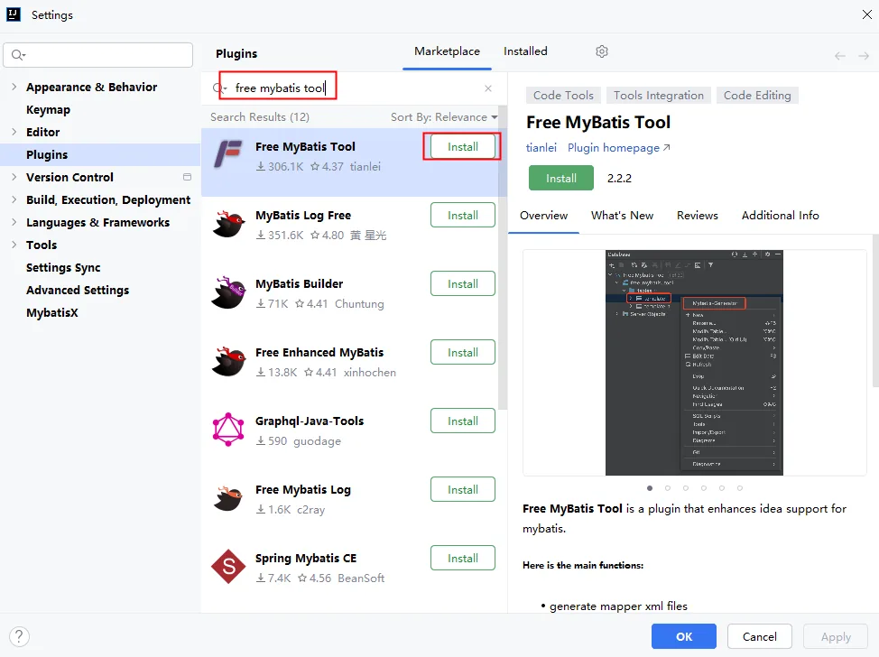
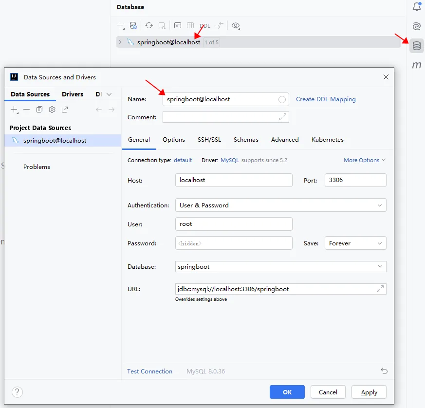
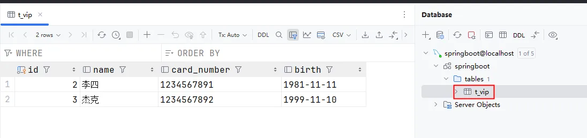
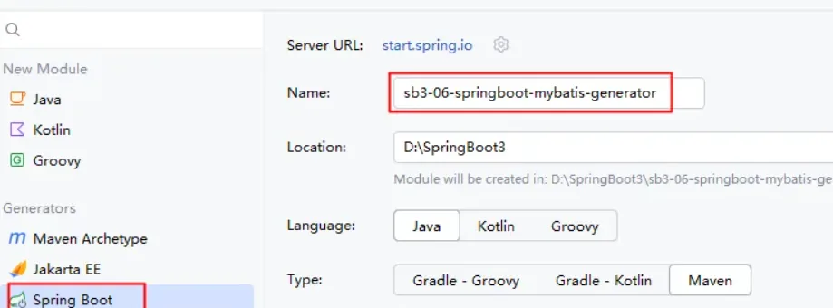
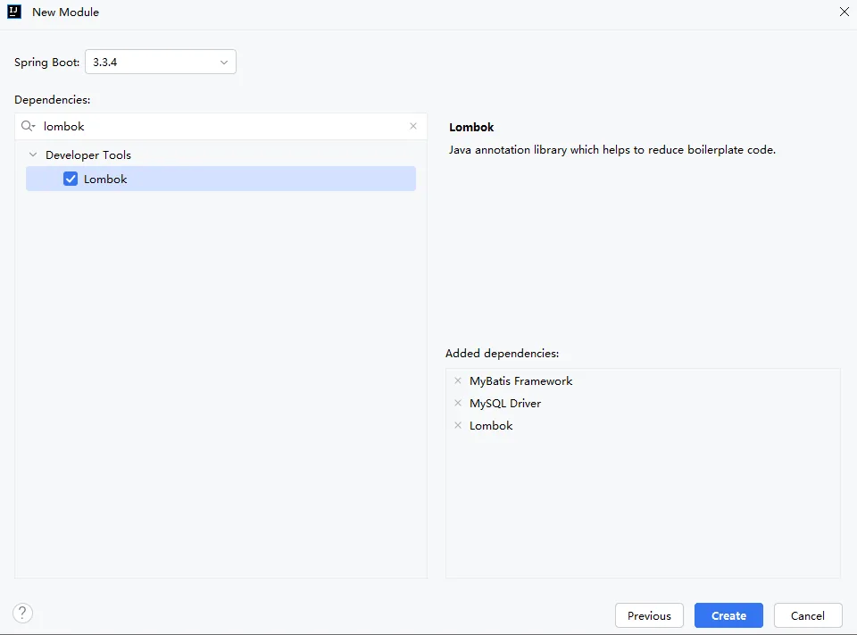
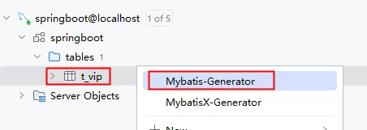
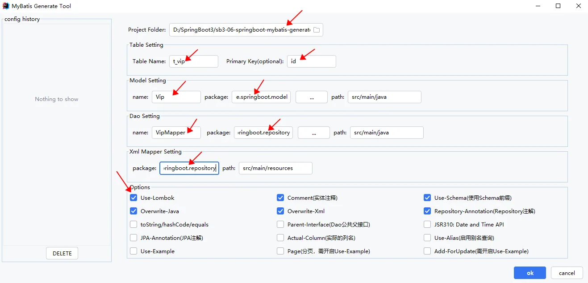
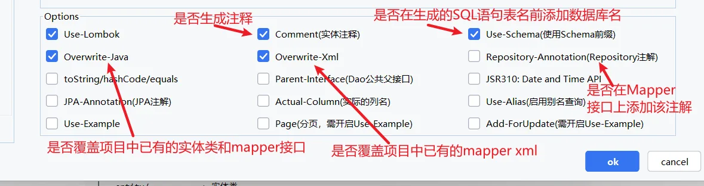
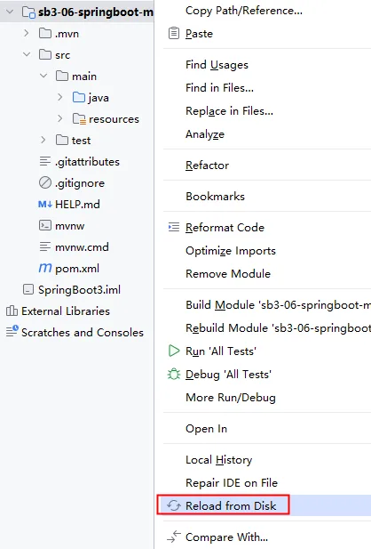

MyBatis逆向工程：使用IDEA插件可以根据数据库表的设计逆向生成MyBatis的Mapper接口 与 MapperXML文件。
free mybatis tools



添加依赖：mybatis依赖、mysql驱动、Lombok库

在表上右键：Mybatis-Generator



代码生成后，如果在IDEA中看不到，这样做（重新从硬盘加载）：

application.properties属性文件的配置：
```properties
spring.datasource.driver-class-name=com.mysql.cj.jdbc.Driver
spring.datasource.url=jdbc:mysql://localhost:3306/springboot
spring.datasource.username=root
spring.datasource.password=123456